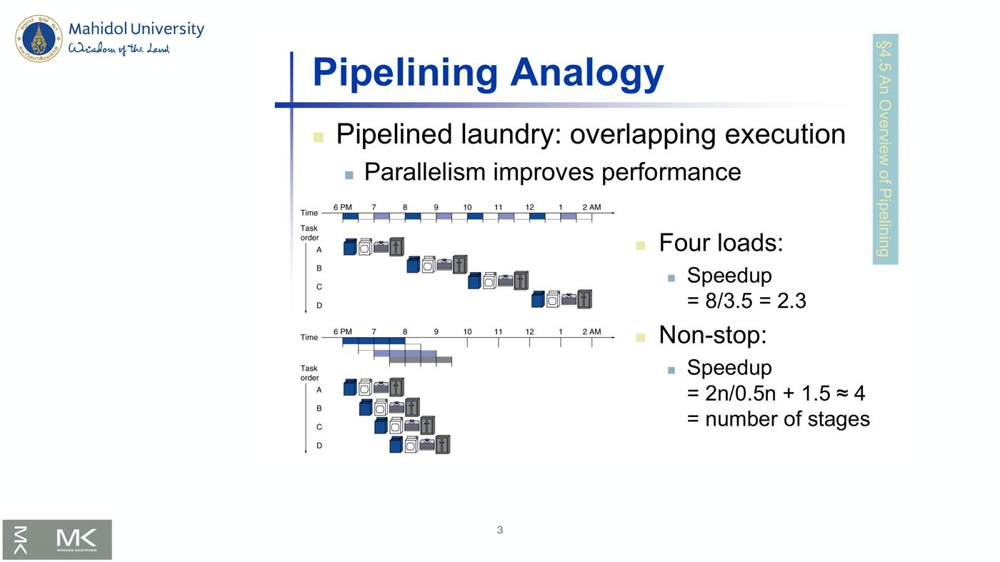
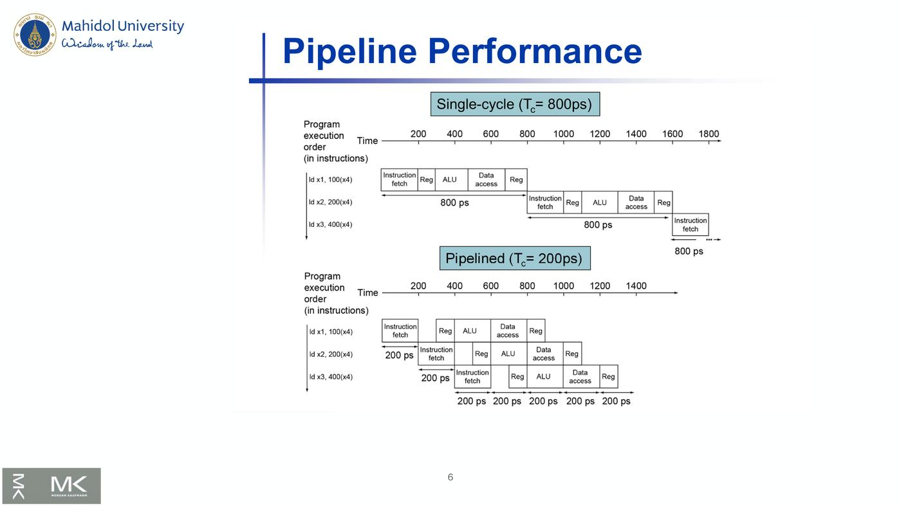

ภาพรวมบทนี้: หัวข้อ "computing units" ในบทนี้คือ Pipelining — การทำคำสั่งหลายคำสั่งซ้อนกันเป็นช่วง ๆ เพื่อเพิ่ม throughput
เนื้อหา: pipeline 5 ขั้นของ RISC-V, การคำนวณ performance, hazards 3 แบบ (structure, data, control) และวิธีแก้ (separate memories, forwarding, stall, branch prediction), pipeline registers, การตรวจหา hazard และตัวอย่าง branch taken
ต่อยอดจาก Chapter 1 (Eight Great Ideas — performance via pipelining / prediction) และ Chapter 3 (คำสั่ง RISC-V)
1. Pipelining Analogy (สไลด์ 3)
Pipelined laundry: overlapping execution — เหมือนซักผ้าหลายตะกร้า ไม่ต้องรอตะกร้าแรกเสร็จทุกขั้นก่อนเริ่มตะกร้าถัดไป → parallelism ช่วยเพิ่ม performance
- 4 loads: Speedup = 8 / 3.5 = 2.3
- Non-stop (จำนวน load มาก ๆ): Speedup = 2n / (0.5n + 1.5) ≈ 4 = จำนวน stages

💡 เปรียบเหมือนเครื่องซัก เครื่องอบ โต๊ะพับ ตู้เก็บ ทำงานพร้อมกันกับผ้าคนละตะกร้า — เมื่อทำต่อเนื่องนาน ๆ จะเร็วขึ้นเกือบเท่าจำนวนขั้น
2. RISC-V Pipeline และ Performance (สไลด์ 4–6)
2.1 Five stages (สไลด์ 4)
แต่ละขั้นทำ 1 step:
| ขั้น | ชื่อ | ทำอะไร |
|---|---|---|
| 1 | IF | Instruction fetch from memory |
| 2 | ID | Instruction decode & register read |
| 3 | EX | Execute operation หรือ calculate address |
| 4 | MEM | Access memory operand |
| 5 | WB | Write result back to register |
2.2 Pipeline Performance (สไลด์ 5)
สมมติ: register read หรือ write = 100ps, ขั้นอื่น = 200ps
| Instr | Instr fetch | Register read | ALU op | Memory access | Register write | Total |
|---|---|---|---|---|---|---|
| ld | 200 | 100 | 200 | 200 | 100 | 800ps |
| sd | 200 | 100 | 200 | 200 | — | 700ps |
| R-format | 200 | 100 | 200 | — | 100 | 600ps |
| beq | 200 | 100 | 200 | — | — | 500ps |
2.3 Single-cycle vs Pipelined (สไลด์ 6)
- Single-cycle: Tc = 800ps (ทุกคำสั่งต้องใช้เวลาเท่าคำสั่งที่ช้าที่สุด) — ld 3 คำสั่งเริ่มห่างกันทีละ 800ps
- Pipelined: Tc = 200ps (เท่าขั้นที่ช้าที่สุด) — ld 3 คำสั่งเริ่มห่างกันทีละ 200ps

⚠️ ใน pipeline ทุกขั้นใช้เวลาเท่ากัน = ขั้นที่ช้าที่สุด (200ps) แม้ register read/write ใช้จริงแค่ 100ps
3. Pipelining and ISA Design (สไลด์ 7)
RISC-V ISA ถูกออกแบบมาเพื่อ pipelining:
- ทุกคำสั่งยาว 32 bits → fetch และ decode ในรอบเดียวง่าย (เทียบ x86: คำสั่งยาว 1–17 bytes)
- รูปแบบคำสั่งน้อยและสม่ำเสมอ → decode และอ่าน register ได้ในขั้นเดียว
- Load/store addressing → คำนวณ address ในขั้นที่ 3 แล้วเข้าถึง memory ในขั้นที่ 4
4. Hazards (สไลด์ 8–9)
Hazard = สถานการณ์ที่ทำให้เริ่มคำสั่งถัดไปในรอบถัดไปไม่ได้
| Hazard | สาเหตุ |
|---|---|
| Structure hazard | ทรัพยากรที่ต้องใช้ ไม่ว่าง |
| Data hazard | ต้องรอคำสั่งก่อนหน้า อ่าน/เขียนข้อมูลให้เสร็จ |
| Control hazard | การตัดสินใจควบคุม (เช่น branch) ขึ้นกับคำสั่งก่อนหน้า |
Structure Hazards (สไลด์ 9)
- แย่งใช้ทรัพยากร
- ใน RISC-V pipeline ที่มี memory เดียว: load/store ต้องเข้าถึงข้อมูล → instruction fetch ต้อง stall รอบนั้น → เกิด "bubble"
- ทางแก้: pipelined datapath ต้องมี instruction memory และ data memory แยกกัน (หรือ I-cache / D-cache แยกกัน)
5. Data Hazards (สไลด์ 10–13)
5.1 Data Hazard (สไลด์ 10)
คำสั่งหนึ่งขึ้นกับการเข้าถึงข้อมูลของคำสั่งก่อนหน้า:
add x19, x0, x1
sub x2, x19, x3 ← ต้องใช้ x19 ที่ add ยังเขียนไม่เสร็จ
ถ้ารอให้ add เขียน x19 ใน WB ก่อน จะต้องมี bubble 2 รอบ (ตามภาพ)
5.2 Forwarding (aka Bypassing) (สไลด์ 11)
- ใช้ผลลัพธ์ทันทีที่คำนวณเสร็จ ไม่ต้องรอให้เก็บลง register
- ต้องมี ทางเชื่อมเพิ่มใน datapath
- ภาพ:
add x1, x2, x3→ ผลจาก EX ส่งตรงไปให้sub x4, x1, x5ในขั้น EX ถัดไป
5.3 Load-Use Data Hazard (สไลด์ 12)
- forwarding เลี่ยง stall ไม่ได้เสมอ — ถ้าค่ายังไม่ถูกคำนวณตอนที่ต้องใช้
- "Can't forward backward in time!"
- ภาพ:
ld x1, 0(x2)ได้ค่าหลัง MEM →sub x4, x1, x5ต้อง stall 1 รอบ (bubble) แล้วจึง forward
5.4 Code Scheduling to Avoid Stalls (สไลด์ 13)
จัดลำดับโค้ดใหม่ เพื่อไม่ให้ใช้ผลของ load ในคำสั่งถัดไปทันที
C: a = b + e; c = b + f;
| ลำดับเดิม (13 cycles) | ลำดับใหม่ (11 cycles) |
|---|---|
ld x1, 0(x0) |
ld x1, 0(x0) |
ld x2, 8(x0) |
ld x2, 8(x0) |
stall → add x3, x1, x2 |
ld x4, 16(x0) |
sd x3, 24(x0) |
add x3, x1, x2 |
ld x4, 16(x0) |
sd x3, 24(x0) |
stall → add x5, x1, x4 |
add x5, x1, x4 |
sd x5, 32(x0) |
sd x5, 32(x0) |
💡 ย้าย
ld x4ขึ้นไปก่อน → ไม่มีคำสั่งไหนใช้ผล load ทันที → ไม่ต้อง stall ประหยัด 2 cycles
6. Control Hazards (สไลด์ 14–17)
6.1 Control Hazards (สไลด์ 14)
- Branch กำหนดทิศทางการทำงาน → การ fetch คำสั่งถัดไปขึ้นกับผลของ branch
- pipeline fetch คำสั่งที่ถูกต้องไม่ได้เสมอ เพราะยังอยู่ในขั้น ID ของ branch
- ใน RISC-V: ต้องเทียบ register และคำนวณ target เร็ว ๆ ใน pipeline → เพิ่ม hardware ให้ทำในขั้น ID
6.2 Stall on Branch (สไลด์ 15)
- รอจนรู้ผล branch ก่อน fetch คำสั่งถัดไป
- ภาพ:
add x4, x5, x6→beq x1, x0, 40→ bubble →or x7, x8, x9เริ่มช้าไป 400ps
6.3 Branch Prediction (สไลด์ 16)
- pipeline ที่ยาวขึ้นรู้ผล branch เร็ว ๆ ไม่ได้ → stall penalty รับไม่ได้
- ทำนายผล branch → stall เฉพาะเมื่อทำนายผิด
- ใน RISC-V: ทำนายว่า branch not taken → fetch คำสั่งถัดจาก branch ทันทีโดยไม่ต้องรอ
6.4 More-Realistic Branch Prediction (สไลด์ 17)
| Static branch prediction | Dynamic branch prediction | |
|---|---|---|
| หลักการ | ใช้พฤติกรรม branch ทั่วไป (เช่น branch ของ loop และ if) | hardware วัดพฤติกรรม branch จริง เช่น บันทึกประวัติล่าสุดของแต่ละ branch |
| วิธี | ทำนาย backward branch = taken และ forward branch = not taken | สมมติว่าอนาคตเป็นไปตามแนวโน้มเดิม |
| เมื่อผิด | — | stall ระหว่าง re-fetch แล้ว update history |
💡 backward branch มักเป็นท้ายลูป (วนกลับบ่อย) จึงทำนาย taken
7. Pipeline Summary — The BIG Picture (สไลด์ 18)
- Pipelining เพิ่ม performance โดย เพิ่ม instruction throughput
- ทำหลายคำสั่งขนานกัน
- แต่ละคำสั่งยังมี latency เท่าเดิม
- มีปัญหา hazards: structure, data, control
- การออกแบบ instruction set มีผลต่อความซับซ้อนของการ implement pipeline
⚠️ pipelining ไม่ ทำให้คำสั่งเดี่ยวเร็วขึ้น — เพิ่มจำนวนคำสั่งที่เสร็จต่อหน่วยเวลา
8. Pipelined Datapath และ Pipeline Registers (สไลด์ 19–20)
8.1 RISC-V Pipelined Datapath (สไลด์ 19)
- datapath แบ่งเป็น 5 ส่วน: IF (instruction fetch), ID (instruction decode/register file read), EX (execute/address calculation), MEM (memory access), WB (write back)
- ข้อมูลส่วนใหญ่ไหลจากซ้ายไปขวา แต่มี 2 จุดที่ไหล ขวาไปซ้าย: MEM (ผล branch กลับไปเลือก PC) และ WB (เขียนผลกลับ register file)
- "Right-to-left flow leads to hazards"
8.2 Pipeline registers (สไลด์ 20)
- ต้องมี registers คั่นระหว่างขั้น เพื่อเก็บข้อมูลที่ขั้นก่อนหน้าสร้างไว้ในรอบที่แล้ว
- ชื่อ: IF/ID, ID/EX, EX/MEM, MEM/WB
9. Pipeline Operation (สไลด์ 21–30)
9.1 แนวคิด (สไลด์ 21)
- ดูการไหลของคำสั่งผ่าน pipelined datapath ทีละรอบ (cycle-by-cycle)
- "Single-clock-cycle" pipeline diagram: แสดงการใช้ pipeline ในรอบเดียว, ไฮไลต์ทรัพยากรที่ใช้
- เทียบ "multi-clock-cycle" diagram: กราฟการทำงานตามเวลา
- บทนี้ดู single-clock-cycle diagrams ของ load และ store
9.2 Load (ld) ทีละขั้น (สไลด์ 22–27)
| ขั้น | สิ่งที่เกิด (ส่วนที่ไฮไลต์ในภาพ) |
|---|---|
| IF (สไลด์ 22) | อ่านคำสั่งจาก instruction memory, PC + 4 → เก็บใน IF/ID |
| ID (สไลด์ 23) | อ่าน registers, Imm Gen สร้าง immediate → เก็บใน ID/EX |
| EX (สไลด์ 24) | ALU คำนวณ address = register + immediate → เก็บใน EX/MEM |
| MEM (สไลด์ 25) | อ่าน data memory → เก็บใน MEM/WB |
| WB (สไลด์ 26) | เขียนข้อมูลกลับ register — สไลด์ชี้ว่า "Wrong register number" |
| Corrected (สไลด์ 27) | แก้โดย ส่งหมายเลข register ปลายทาง (write register) ไปตาม pipeline registers จนถึง WB |
⚠️ ปัญหา WB: ตอนถึงขั้น WB หมายเลข register ใน IF/ID เป็นของคำสั่งอื่นไปแล้ว จึงต้องส่งหมายเลข rd ต่อไปพร้อมคำสั่ง
9.3 Store (sd) (สไลด์ 28–30)
- EX for Store: ALU คำนวณ address
- MEM for Store: เขียนข้อมูลลง data memory
- WB for Store: ไม่มีงานทำในขั้นนี้ (ภาพไม่มีส่วนไฮไลต์)
10. Pipeline Diagrams และ Pipelined Control (สไลด์ 31–34)
10.1 Multi-Cycle Pipeline Diagram (สไลด์ 31–32)
ตัวอย่าง 5 คำสั่ง: ld x10, 40(x1), sub x11, x2, x3, add x12, x3, x4, ld x13, 48(x1), add x14, x5, x6 ใน CC1–CC9
- แบบแสดงการใช้ทรัพยากร: IM → Reg → ALU → DM → Reg
- แบบดั้งเดิม (traditional): Instruction fetch → Instruction decode → Execution → Data access → Write-back เลื่อนไปทีละ 1 CC
| CC1 | CC2 | CC3 | CC4 | CC5 | CC6 | CC7 | CC8 | CC9 | |
|---|---|---|---|---|---|---|---|---|---|
| ld x10 | IF | ID | EX | MEM | WB | ||||
| sub x11 | IF | ID | EX | MEM | WB | ||||
| add x12 | IF | ID | EX | MEM | WB | ||||
| ld x13 | IF | ID | EX | MEM | WB | ||||
| add x14 | IF | ID | EX | MEM | WB |
10.2 Single-Cycle Pipeline Diagram (สไลด์ 33)
สถานะของ pipeline ในรอบหนึ่ง — ใน CC5: add x14 (IF), ld x13 (ID), add x12 (EX), sub x11 (MEM), ld x10 (WB)
10.3 Pipelined Control (Simplified) (สไลด์ 34)
datapath พร้อมสัญญาณควบคุม: PCSrc, Branch, RegWrite, ALUSrc, ALU control (ALUOp), MemWrite, MemRead, MemtoReg — ใช้ instruction bits [31–0], [30, 14–12], [11–7]
11. Data Hazards: Forwarding vs Stalling (สไลด์ 35–43)
11.1 Data Hazards in ALU Instructions (สไลด์ 35–36)
sub x2, x1, x3
and x12, x2, x5
or x13, x6, x2
add x14, x2, x2
sd x15, 100(x2)
- แก้ hazard ด้วย forwarding — แล้วจะรู้ได้อย่างไรว่าเมื่อไรต้อง forward?
- ภาพ Dependencies (สไลด์ 36): ค่า x2 = 10 ใน CC1–CC4, 10/−20 ใน CC5, −20 ใน CC6–CC9
andและorต้องการ x2 ก่อนที่ sub จะเขียนลง register (เส้นสีแดง = ต้องย้อนเวลา → ต้อง forward)addและsdอ่าน x2 ได้ทันเวลา
11.2 Detecting the Need to Forward (สไลด์ 37–38)
- ส่งหมายเลข register ไปตาม pipeline เช่น ID/EX.RegisterRs1 = หมายเลข Rs1 ใน ID/EX pipeline register
- ALU operand register numbers ในขั้น EX คือ ID/EX.RegisterRs1, ID/EX.RegisterRs2
- Data hazard เกิดเมื่อ:
| กรณี | เงื่อนไข | Forward จาก |
|---|---|---|
| 1a | EX/MEM.RegisterRd = ID/EX.RegisterRs1 | EX/MEM pipeline reg |
| 1b | EX/MEM.RegisterRd = ID/EX.RegisterRs2 | EX/MEM pipeline reg |
| 2a | MEM/WB.RegisterRd = ID/EX.RegisterRs1 | MEM/WB pipeline reg |
| 2b | MEM/WB.RegisterRd = ID/EX.RegisterRs2 | MEM/WB pipeline reg |
- แต่ forward เฉพาะเมื่อ:
- คำสั่งที่ forward จะเขียน register จริง: EX/MEM.RegWrite, MEM/WB.RegWrite
- Rd ไม่ใช่ x0: EX/MEM.RegisterRd ≠ 0, MEM/WB.RegisterRd ≠ 0
11.3 Forwarding Paths (สไลด์ 39)
มี Forwarding unit รับ Rs1, Rs2 (จาก ID/EX) และ EX/MEM.RegisterRd, MEM/WB.RegisterRd แล้วควบคุม mux ForwardA และ ForwardB หน้า ALU
11.4 Forwarding Conditions (สไลด์ 40)
| Mux control | Source | ความหมาย |
|---|---|---|
| ForwardA = 00 | ID/EX | operand ตัวที่ 1 มาจาก register file |
| ForwardA = 10 | EX/MEM | operand ตัวที่ 1 forward มาจาก ALU result ก่อนหน้า |
| ForwardA = 01 | MEM/WB | operand ตัวที่ 1 forward มาจาก data memory หรือ ALU result ก่อนหน้านั้น |
| ForwardB = 00 | ID/EX | operand ตัวที่ 2 มาจาก register file |
| ForwardB = 10 | EX/MEM | operand ตัวที่ 2 forward มาจาก ALU result ก่อนหน้า |
| ForwardB = 01 | MEM/WB | operand ตัวที่ 2 forward มาจาก data memory หรือ ALU result ก่อนหน้านั้น |
💡 10 = ใกล้กว่า (EX/MEM, คำสั่งก่อนหน้า 1 ตัว) | 01 = ไกลกว่า (MEM/WB, ก่อนหน้า 2 ตัว)
11.5 Double Data Hazard (สไลด์ 41–42)
add x1, x1, x2
add x1, x1, x3
add x1, x1, x4
- เกิด hazard ทั้งสองแบบพร้อมกัน (EX และ MEM) → ต้องใช้ค่าที่ ใหม่ที่สุด
- แก้ MEM hazard condition: forward จาก MEM/WB เฉพาะเมื่อ EX hazard condition ไม่เป็นจริง
Revised Forwarding Condition — MEM hazard:
if (MEM/WB.RegWrite
and (MEM/WB.RegisterRd ≠ 0)
and not (EX/MEM.RegWrite and (EX/MEM.RegisterRd ≠ 0)
and (EX/MEM.RegisterRd ≠ ID/EX.RegisterRs1))
and (MEM/WB.RegisterRd = ID/EX.RegisterRs1)) ForwardA = 01
if (MEM/WB.RegWrite
and (MEM/WB.RegisterRd ≠ 0)
and not (EX/MEM.RegWrite and (EX/MEM.RegisterRd ≠ 0)
and (EX/MEM.RegisterRd ≠ ID/EX.RegisterRs2))
and (MEM/WB.RegisterRd = ID/EX.RegisterRs2)) ForwardB = 01
(เขียนตามสไลด์ 42 ทุกตัวอักษร ส่วนสีฟ้าในสไลด์คือบรรทัด and not(...) ที่เพิ่มเข้ามา)
⚠️ ในสไลด์ บรรทัดใน
not(...)เขียนว่าEX/MEM.RegisterRd ≠ ID/EX.RegisterRs1แต่สไลด์ 41 บอกว่า "Only fwd if EX hazard condition isn't true" ซึ่ง EX hazard คือกรณีที่ Rd = Rs1 — สองสไลด์นี้ดูไม่สอดคล้องกัน ควรถามอาจารย์ว่าตอนสอบใช้แบบไหน
11.6 Datapath with Forwarding (สไลด์ 43)
datapath เต็มที่มี Control, Forwarding unit, mux หน้า ALU 2 ตัว และส่ง IF/ID.RegisterRs1, Rs2, Rd ไปตาม pipeline
12. Load-Use Hazard Detection และ Stall (สไลด์ 44–48)
12.1 Load-Use Hazard Detection (สไลด์ 44)
- ตรวจตอนที่คำสั่งที่ใช้ค่าถูก decode ในขั้น ID
- ALU operand register numbers ในขั้น ID คือ IF/ID.RegisterRs1, IF/ID.RegisterRs2
- Load-use hazard เมื่อ:
ID/EX.MemRead and
((ID/EX.RegisterRd = IF/ID.RegisterRs1) or
(ID/EX.RegisterRd = IF/ID.RegisterRs1))
- ถ้าตรวจพบ → stall และแทรก bubble
⚠️ สไลด์เขียน
IF/ID.RegisterRs1ซ้ำทั้งสองวงเล็บ — วงเล็บที่สองควรเป็น Rs2 ให้สอดคล้องกับบรรทัด "IF/ID.RegisterRs1, IF/ID.RegisterRs2" ด้านบน
12.2 How to Stall the Pipeline (สไลด์ 45)
- บังคับค่า control ใน ID/EX register เป็น 0 → ขั้น EX, MEM, WB ทำ nop (no-operation)
- ไม่ให้ update PC และ IF/ID register
- คำสั่งที่ใช้ค่าถูก decode ใหม่
- คำสั่งถัดไปถูก fetch ใหม่
- stall 1 รอบ ทำให้ MEM อ่านข้อมูลของ
ldทัน → จากนั้น forward ไปขั้น EX ได้
12.3 Load-Use Data Hazard ในภาพ (สไลด์ 46)
ld x2, 20(x1)
and x4, x2, x5 ← กลายเป็น nop (bubble), แล้วทำใหม่
or x8, x2, x6
add x9, x4, x2
"Stall inserted here" — and กลายเป็น nop 1 รอบ แล้วทุกคำสั่งถัดไปเลื่อนไป 1 CC
12.4 Datapath with Hazard Detection (สไลด์ 47)
เพิ่ม Hazard detection unit ที่รับ ID/EX.MemRead, IF/ID.RegisterRs1/Rs2 แล้วควบคุม PCWrite, IF/IDWrite และ mux ที่ใส่ 0 ให้ control
12.5 Stalls and Performance — The BIG Picture (สไลด์ 48)
- Stall ลด performance แต่ จำเป็นเพื่อให้ผลถูกต้อง
- Compiler จัดโค้ดเพื่อเลี่ยง hazard และ stall ได้ — ต้องรู้โครงสร้าง pipeline
13. Branch Hazards (สไลด์ 49–52)
13.1 Branch Hazards (สไลด์ 49)
- ถ้าผล branch รู้ใน MEM:
40 beq x1, x0, 16
44 and x12, x2, x5
48 or x13, x6, x2
52 add x14, x2, x2
72 ld x4, 100(x7)
- คำสั่ง 44, 48, 52 ถูก fetch ไปแล้ว → ต้อง flush (set control values to 0) แล้ว PC ไปที่ 72
13.2 Reducing Branch Delay (สไลด์ 50)
ย้าย hardware ที่ตัดสินผล branch ไปไว้ในขั้น ID:
- Target address adder
- Register comparator
ตัวอย่าง: branch taken
36: sub x10, x4, x8
40: beq x1, x3, 16 // PC-relative branch to 40+16*2=72
44: and x12, x2, x5
48: orr x13, x2, x6
52: add x14, x4, x2
56: sub x15, x6, x7
...
72: ld x4, 50(x7)
13.3 Example: Branch Taken (สไลด์ 51–52)
- Clock 3: beq x1, x3, 16 อยู่ในขั้น ID (มีตัวเปรียบเทียบ = และตัวบวก target), and x12 อยู่ใน IF, sub x10 อยู่ใน EX — สัญญาณ IF.Flush ทำงาน
- Clock 4: ld x4, 50(x7) ถูก fetch (PC = 72), คำสั่ง and ที่ fetch ผิดกลายเป็น Bubble (nop), beq อยู่ใน EX
- → เสียแค่ 1 bubble เมื่อตัดสิน branch ใน ID
💡 ตัดสินใน MEM ต้อง flush 3 คำสั่ง | ตัดสินใน ID เหลือ flush 1 คำสั่ง
คำศัพท์สำคัญ
| คำศัพท์ | ความหมาย | จำง่าย ๆ ว่า |
|---|---|---|
| Pipelining | ทำคำสั่งซ้อนกันเป็นขั้น | ซักผ้าหลายตะกร้าพร้อมกัน |
| IF / ID / EX / MEM / WB | 5 ขั้นของ RISC-V | fetch, decode, execute, memory, write back |
| Throughput | จำนวนคำสั่งที่เสร็จต่อเวลา | pipeline เพิ่มตัวนี้ |
| Latency | เวลาของคำสั่งเดียว | pipeline ไม่ลด |
| Structure hazard | แย่งทรัพยากร | แก้ด้วย I/D memory แยก |
| Data hazard | รอข้อมูลจากคำสั่งก่อน | แก้ด้วย forwarding / stall |
| Control hazard | รอผล branch | แก้ด้วย stall / prediction |
| Bubble / nop | รอบที่ว่างเปล่า | stall |
| Forwarding (bypassing) | ส่งผลลัพธ์ข้ามไปใช้ทันที | ไม่ต้องรอเขียน register |
| Load-use hazard | ใช้ผล ld ในคำสั่งถัดไปทันที | ต้อง stall 1 รอบ |
| Code scheduling | จัดลำดับคำสั่งใหม่ | 13 → 11 cycles |
| Static / Dynamic prediction | ตามกฎทั่วไป / ตามประวัติจริง | backward taken, forward not taken |
| Pipeline registers | IF/ID, ID/EX, EX/MEM, MEM/WB | เก็บข้อมูลระหว่างขั้น |
| ForwardA/B | mux เลือก operand ของ ALU | 00 reg, 10 EX/MEM, 01 MEM/WB |
| Flush | ล้างคำสั่งที่ fetch ผิด | set control = 0 |
สรุปท้ายบท / จุดที่มักออกสอบ
- Laundry: 4 loads speedup 2.3 | non-stop speedup ≈ จำนวน stages (4)
- 5 ขั้น: IF → ID → EX → MEM → WB
- เวลา: ld 800, sd 700, R 600, beq 500 ps | single-cycle Tc = 800ps, pipelined Tc = 200ps
- RISC-V เหมาะกับ pipeline: คำสั่ง 32 bit ทั้งหมด (x86 1–17 bytes), format น้อยและสม่ำเสมอ, load/store addressing (address ในขั้น 3, memory ในขั้น 4)
- Hazards 3 แบบ: structure (I/D memory แยก), data (forwarding, stall, code scheduling), control (stall, prediction, ตัดสินใน ID)
- Forwarding ใช้ไม่ได้กับ load-use → stall 1 รอบ ("can't forward backward in time")
- Code scheduling: a = b + e; c = b + f → 13 → 11 cycles
- Branch prediction: RISC-V ทำนาย not taken | static: backward taken, forward not taken | dynamic: ใช้ประวัติ
- Pipelining เพิ่ม throughput แต่ latency เท่าเดิม
- Right-to-left flow (MEM → PC, WB → register) ทำให้เกิด hazards
- Load WB: ต้องส่ง หมายเลข rd ไปตาม pipeline registers (แก้ "wrong register number")
- เงื่อนไข forward: EX/MEM.Rd หรือ MEM/WB.Rd = ID/EX.Rs1/Rs2 และ RegWrite และ Rd ≠ x0
- ForwardA/B: 00 = register file, 10 = EX/MEM, 01 = MEM/WB
- Double data hazard: ใช้ค่าล่าสุด → forward จาก MEM/WB เฉพาะเมื่อไม่มี EX hazard
- Load-use detection: ID/EX.MemRead และ ID/EX.Rd = IF/ID.Rs1 หรือ Rs2 → stall: control ใน ID/EX = 0, ไม่ update PC และ IF/ID
- Branch: ตัดสินใน MEM → flush 3 คำสั่ง | ย้ายไป ID (target adder + register comparator) → เสีย 1 bubble | target = 40 + 16×2 = 72